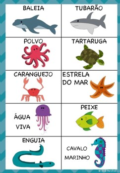
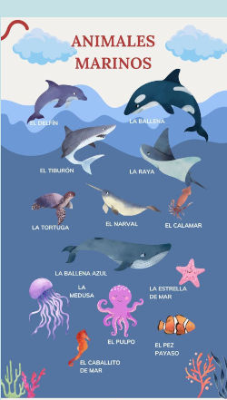

O Mar que Brilha!
No fundo do mar mora um mundo encantado, cheio de peixinhos que dançam, estrelas-do-mar que brilham e polvos que adoram brincar! Venha mergulhar com a gente nessa aventura azul e descobrir os segredos mágicos do oceano!
Vamos aprender os animais marinhos em espanhol!
Olá, amiguinho! 🌊 Aqui tem uma imagem cheia de animais do fundo do mar e os nomes deles estão em espanhol! Observe bem, repita os nomes em voz alta e descubra como se diz polvo, tartaruga e peixe em outra língua! 🐠🦀🐢 ¡Vamos aprender brincando!
